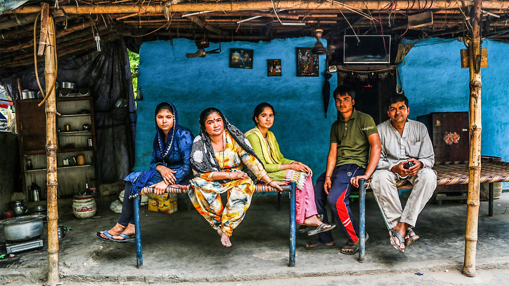
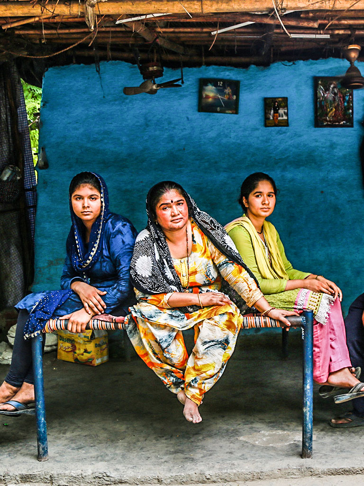

 
If you were a refugee, what would you pack? How would you decide what to leave behind, within the borders that once defined you, and what to take, as you set out on a perilous journey?
Will you take the house keys, as a souvenir of the place you once called home? Will you pack the family photographs, to remind you of happier times? What about the certificates and papers that document your life? Will you take those lovingly embroidered pillow cases? What will you leave behind?
Refugees carry a part of their homes in their bags when they cross borders. These items tell the story of lives cut short, of identities, of home. We ask some families what they took with them when they were forced to flee their homes.

In the October of 2013, 42-year-old Mahadev Advani fled Pakistan with his wife and four children to escape alleged religious persecution. Their search for shelter brought them to Hindu-majority India.
Refugees have no option but to travel light, as their journey to their new lives is an arduous one. Not many survive the journey either. A devout Mahadev brought with him a copy of the Bhagwad Gita, written in Sindhi. “I can only read Sindhi. I wasn’t sure if I would get one in India".
“In an unfamiliar country with nowhere to go and no one to lean on, I hold on to this for strength. The human mind is fickle and easily distracted,” he says. “This book gives me direction. It tells me what to do in life. It keeps evil at bay. But then again, what is good in the life of a refugee?”
In the large thatched tent that the Advanis live in, it is hard to spot traces of Pakistan, the land they left behind. A recently purchased sewing machine, that rests on a manji, is Indian, as are the steel utensils on the shelf. But a closer look reveals hints of the Advani family’s beloved homeland.
Mahadev’s 37-year-old wife shows off her collection of embroidered pillow and blanket covers. Pulling them out of a big trunk, Bhagli says, “When we were leaving, my sister-in-law and mother gave some to me to keep”.
“These covers remind me of my sister, my mother, my uncle and aunt. These remind me of my home. My Sindh. My country where I was born. We have found shelter, but there’s nothing we can call home.”
The work on the pillow covers is called bharat, or Sindhi embroidery. In Sindh, they are considered a status symbol. The cases have been locked up in a trunk in a corner of the Advanis’ Majnu Ka Tila shelter for years now. “I have taken these out after 5 long years. Other than reporters and photographers, no one comes to visit us. No family. No friends. What will I do by decorating this place?” Bhagli has found a better use for these covers. She is now saving them for her daughters’ marriage.
Mahadev’s eldest daughter, Darshana, looks at her school-leaving certificate dated 15 October 2012. She was 11 when she came to India. The certificate reminds her of her school in Tando Allahyar, a town in Sindh, Pakistan. “It was only half an hour away from our house. Father would drop me to
school on his scooter,” she says. English was my favourite subject, but I struggled with Urdu and Sindhi, she says.
Her sister, 13-year-old Jaishati Advani, had to leave behind her favourite pink frock. The ankle-length dress, with delicate embroidery, was a gift from her mother. She shows off the gold band that she has worn since she was a child. “I recently got it altered to fit my fingers”.
“Where we live, we wear a lot of gold jewellery. If you don’t, it is considered bad.”
India is home to a reported 1,20,000 Pakistani Hindu refugees. An estimated 1,000 Hindus migrate to Rajasthan from Pakistan every year. Many of these refugees, who are awaiting Indian citizenship, are forced to live without basic amenities.
“When I saw Dada, dadi for the last time, I wondered if we would ever go back to them, or if they would ever come to us. And that made me cry,” says Dharsahana.